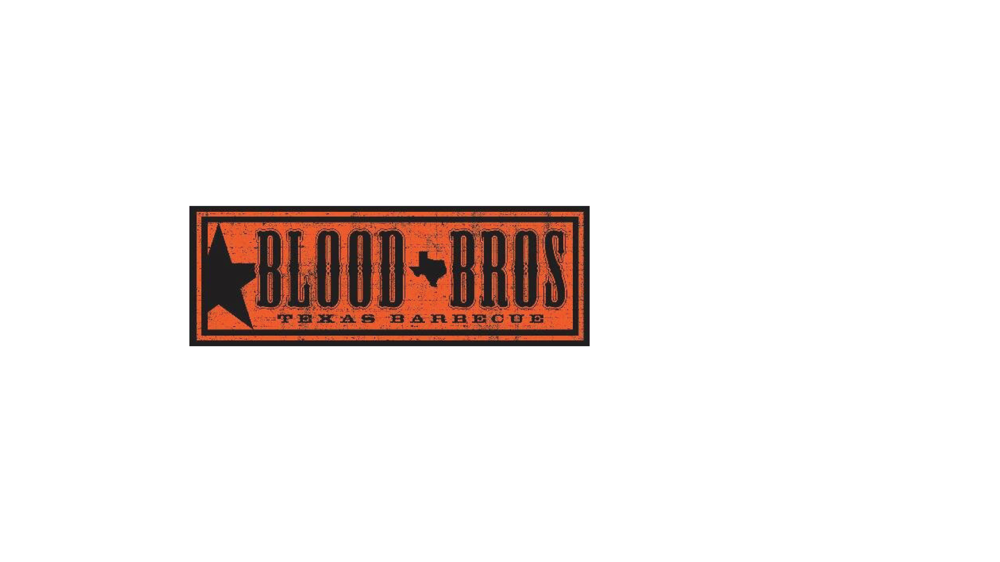
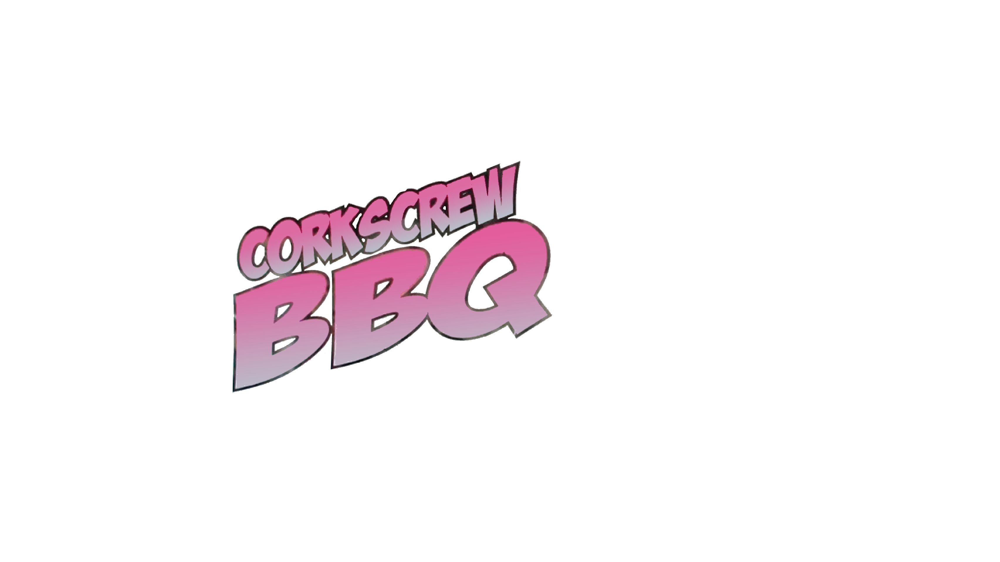
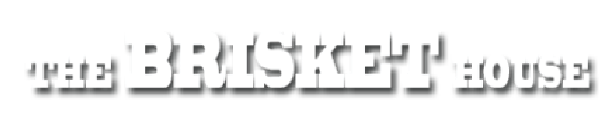
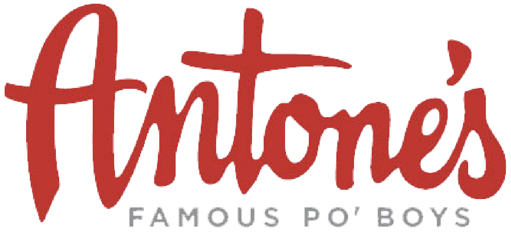

<!DOCTYPE html>
<html>
	<head>
		<meta charset="utf-8">
		<meta name="apple-mobile-web-app-capable" content="yes">
		<title>VR Demo</title>
		<meta name="description" content="360&deg; Image Gallery - A-Frame">
		<script src="https://rawgit.com/aframevr/aframe/917c06889ee1f3f79b7b1bbd9eab9815f9512503/dist/aframe.min.js"></script>
		<script src="https://npmcdn.com/aframe-animation-component@3.0.1"></script>
		<script src="https://npmcdn.com/aframe-event-set-component@3.0.1"></script>
		<script src="https://npmcdn.com/aframe-layout-component@3.0.1"></script>
		<script src="https://npmcdn.com/aframe-template-component@3.0.1"></script>
		<script src="components/set-image.js"></script>
		<script src="components/update-raycaster.js"></script>
		<script src="https://cdnjs.cloudflare.com/ajax/libs/nunjucks/2.3.0/nunjucks.min.js">
	</head>
	<body>
		<a-scene inspector="url: https://aframe.io/releases/0.3.0/aframe-inspector.min.js">
			<a-assets>
				<!-- Store all the assets here -->
				<!-- A unique ID must be assigned to each asset -->

				<!-- images -->
				
				
				
				
				
				

				<!-- thumbnails -->
				
				
				
				
				
				

				<!-- sound (when a button is clicked)-->
				<audio id="click-sound" crossorigin="anonymous" src="https://cdn.aframe.io/360-image-gallery-boilerplate/audio/click.ogg"></audio>

				<!-- Image link template to be reused. -->
				<script id="link" type="text/nunjucks">
					<a-plane
						class="link"
						height="1"
						width="1"
						material="shader: flat; src: {{ thumb }}"
						event-set__1="_event: mousedown; scale: 1 1 1"
						event-set__2="_event: mouseup; scale: 1.2 1.2 1"
						event-set__3="_event: mouseenter; scale: 1.2 1.2 1"
						event-set__4="_event: mouseleave; scale: 1 1 1"
						set-image="on: click; target: #image-360; src: {{ src }}"
						sound="on: click; src: #click-sound"
						update-raycaster="#cursor"></a-plane>
				</script>
			</a-assets>
			<!-- End of Assets -->

			<!-- 360-degree image. -->
			<!-- No need to change this. Just define the starting image in src="#idOfTheStartingImageInYourAssets" -->
			<a-sky id="image-360" radius="10" src="#start"></a-sky>

			<!-- Image links. -->
			<!-- All the buttons
			Attributes:
			data-src="#idOfA360Image"
			(this define the target after clicking/gazing on the button)
			data-thumb="#idOfAThumbnailImage"
			(this is the images of your button)
			-->
			<!-- Position of the buttons will be defined in main.js -->
			<a-entity id="links" position="0 0 -4">
				<a-entity visible="false" class="thumbnail" template="src: #link" data-src="#home" data-thumb="#home-thumb"></a-entity>
				<a-entity visible="false" class="thumbnail" template="src: #link" data-src="#restaurant1" data-thumb="#1-thumb"></a-entity>
				<a-entity visible="false" class="thumbnail" template="src: #link" data-src="#restaurant2" data-thumb="#2-thumb"></a-entity>
				<a-entity visible="false" class="thumbnail" template="src: #link" data-src="#restaurant3" data-thumb="#3-thumb"></a-entity>
				<a-entity visible="false" class="thumbnail" template="src: #link" data-src="#restaurant4" data-thumb="#4-thumb"></a-entity>
				<a-entity visible="false" class="thumbnail" template="src: #link" data-src="#restaurant5" data-thumb="#5-thumb"></a-entity>

			</a-entity>

			<!-- Camera + cursor. -->
			<a-entity camera look-controls>
				<a-cursor
					id="cursor"
					animation__click="property: scale; startEvents: click; from: 0.1 0.1 0.1; to: 1 1 1; dur: 150"
					animation__fusing="property: fusing; startEvents: fusing; from: 1 1 1; to: 0.1 0.1 0.1; dur: 1500"
					event-set__1="_event: mouseenter; color: springgreen"
					event-set__2="_event: mouseleave; color: black"
					raycaster="objects: .link"></a-cursor>
			</a-entity>

		</a-scene>

	</body>

	<script src="https://cdnjs.cloudflare.com/ajax/libs/jquery/3.1.1/jquery.min.js" charset="utf-8"></script>
	<script src="components/main.js" charset="utf-8"></script>
</html>
